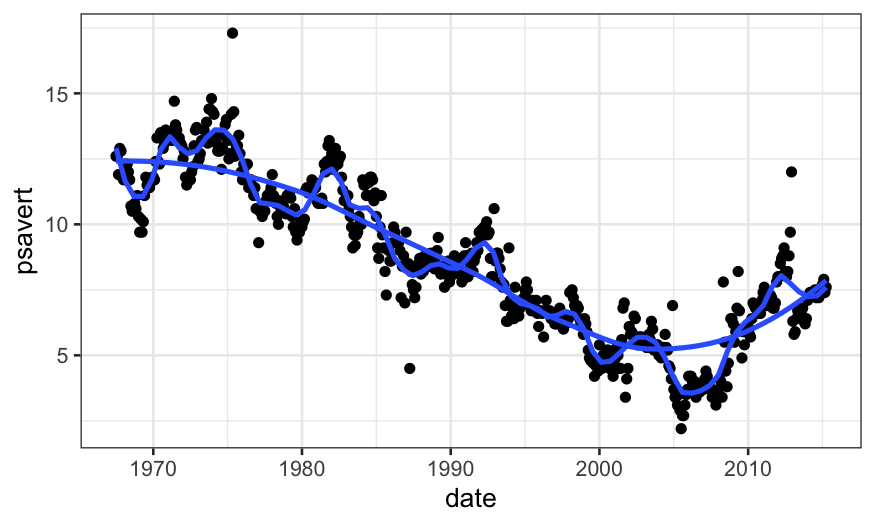
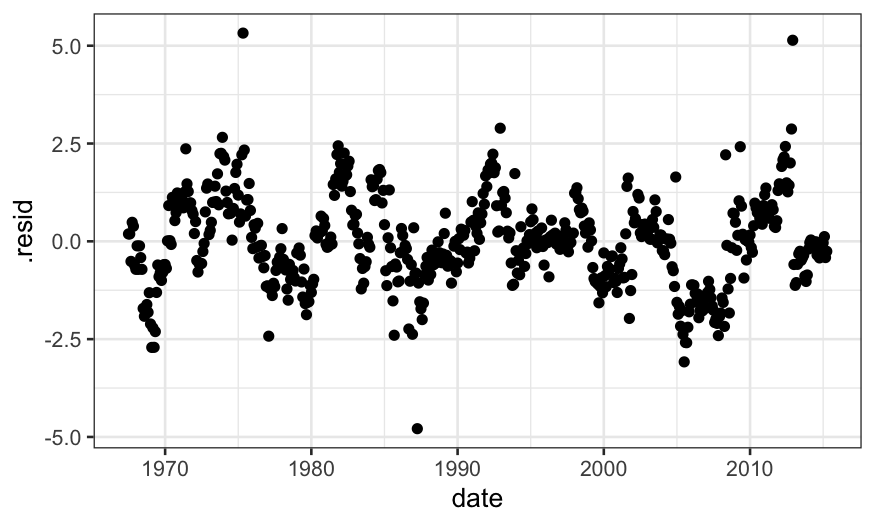
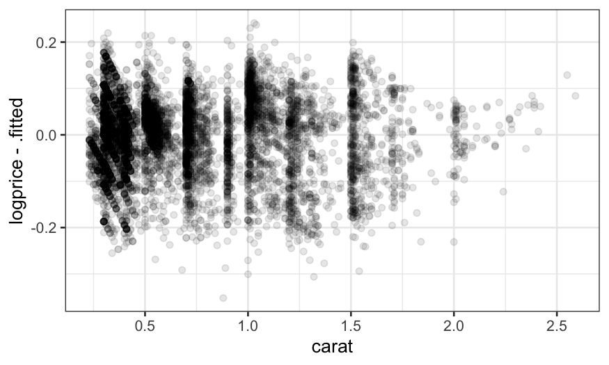

Stat 470/670 Lecture 9: Smoothing bivariate
data
Julia Fukuyama
LOESS
LOESS, or local regression, builds on standard regression. The setup
is:
We have bivariate data, so pairs \((y_i, x_i)\), \(i
= 1,\ldots, n\).
We want to estimate the mean \(E(Y \mid
X)\). We think this is a smooth function of \(X\), but we don’t know what the form of
that function is.
The idea is that since the mean function is smooth, it can be
approximated with a linear or low-order polynomial function in small
regions.
LOESS weights
The way we transform this intuition into a concrete procedure is to
use weighted least squares.
LOESS has two parameters, \(\alpha\)
(the span), and \(\lambda\), the degree
of the local polynomial.
To find the value of the LOESS smoother at a point \(x_0\), we first define weights for all of
the samples: \[
w_i(x_0) = T(\Delta_i(x_0) / \Delta_{(q)}(x_0))
\] where \(\Delta_i(x_0) = |x_i -
x_0|\), \(\Delta_{(i)}(x_0)\)
are the ordered values of \(\Delta_{i}(x_0)\), and \(q = \alpha n\), rounded to the nearest
integer.
\(T\) is the tricube weight function
(invented by Tukey!): \[
T(u) = \begin{cases}
(1 - |u|^3)^3 & |u| \le 1 \\
0 & |u| > 1
\end{cases}
\]
Let’s see what this looks like. We’ll compute and plot weights, so
first we need to define the tricube function:
tricube <- function(u) {
if(abs(u) > 1) {
return(0)
} else {
return((1 - abs(u)^3)^3)
}
}
Then we can define a function that computes the weights used by
LOESS:
#' @param x0 The point
#' @param x A vector containing all of the weights
#' @param alpha The span argument in LOESS
loess_weights <- function(x0, x, alpha) {
## x is a vector, x0 is a single number, so deltas
## is a vector the same length as x with elements |x_i - x0|
deltas = abs(x - x0)
## this is a more parsimonious way of getting the
## delta_{(q)} value we defined on the previous slide
delta_q = quantile(deltas, probs = alpha)
weights = sapply(deltas / delta_q, tricube)
return(weights)
}
Let’s compute the weights on the economics data. We’ll first see what
it looks like for the default value of \(\alpha\), \(\alpha = .75\):
## ── Attaching packages ──────────────────────────────────────── tidyverse 1.3.1 ──
## ✔ tibble 3.1.6 ✔ dplyr 1.0.7
## ✔ tidyr 1.1.4 ✔ stringr 1.4.0
## ✔ readr 2.1.1 ✔ forcats 0.5.1
## ✔ purrr 0.3.4
## ── Conflicts ─────────────────────────────────────────── tidyverse_conflicts() ──
## ✖ dplyr::filter() masks stats::filter()
## ✖ dplyr::lag() masks stats::lag()
library(ggplot2)
library(broom)
library(viridis)
## Error in library(viridis): there is no package called 'viridis'
economics = mutate(economics, date_numeric = as.numeric(date))
summary(economics$date_numeric)
## let's calculate the weights at date_numeric = 3446
weights = loess_weights(x0 = 3446, x = economics$date_numeric, alpha = .75)
economics$weights = weights
ggplot(economics) + geom_point(aes(x = date, y = weights))
What if we decrease \(\alpha\)?
weights = loess_weights(x0 = 3446, x = economics$date_numeric, alpha = .1)
economics$weights = weights
ggplot(economics) + geom_point(aes(x = date, y = weights))

Notice that we have approximately \(\alpha
n\) non-zero weights, and these are going to be the only points
that contribute to the LOESS fit.
## [1] 58
## weights was computed wih alpha = .1, so we have approximately n * .1 non-zero weights
length(weights) * .1
## [1] 57.4
LOESS fits
These weights are then used in a local regression.
If \(\lambda = 1\), we find \(\hat \beta_0\), \(\hat \beta_1\) to minimize the weighted
least squares criterion, \[
\sum_{i=1}^n w_i (y_i - (\hat \beta_0 + \hat \beta_1 x_i))^2,
\]
and the fitted value for the LOESS smoother at \(x_0\) is \(\hat
\beta_0 + \hat \beta_1 x_0\).
If \(\lambda = 2\), we use quadratic
regression, e.g. find \(\hat \beta_0\),
\(\hat \beta_1\), \(\hat \beta_2\) to minimize the weighted
least squares criterion, \[
\sum_{i=1}^n w_i (y_i - (\hat \beta_0 + \hat \beta_1 x_i + \hat \beta_2
x_i^2))^2,
\]
and the fitted value for the LOESS smoother at \(x_0\) is \(\hat
\beta_0 + \hat \beta_1 x_0 + \hat \beta_2 x_0^2\).
The analogous procedure works for any integer value of \(\lambda\).
Let’s use our weights function to do the LOESS fit manually. We’ll go
back to \(\alpha = .75\)
weights = loess_weights(x0 = 3446, x = economics$date_numeric, alpha = .75)
economics$weights = weights
econlm = lm(psavert ~ date_numeric,
weights = economics$weights, data = economics)
## normally we would use 'augment' in 'broom' to get the fitted values,
## but there's a bug there with zero weights
economics$loess.fits = econlm$fitted.values
ggplot(economics) +
## first we'll plot the raw data
geom_point(aes(x = date, y = psavert)) +
## then we'll plot the local linear regression +
geom_line(aes(x = date, y = loess.fits, color = weights),
size = 2, data = subset(economics, weights > 0)) +
scale_color_viridis()
## Error in scale_color_viridis(): could not find function "scale_color_viridis"
weights = loess_weights(x0 = 3446, x = economics$date_numeric, alpha = .1)
economics$weights = weights
econlm = lm(psavert ~ date_numeric + I(date_numeric^2),
weights = economics$weights, data = economics)
## normally we would use 'augment' in 'broom' to get the fitted values,
## but there's a bug there with zero weights
economics$loess.fits = econlm$fitted.values
ggplot(economics) +
## first we'll plot the raw data
geom_point(aes(x = date, y = psavert)) +
## then we'll plot the local linear regression +
geom_line(aes(x = date, y = loess.fits, color = weights),
size = 2, data = subset(economics, weights > 0)) +
scale_color_viridis()
## Error in scale_color_viridis(): could not find function "scale_color_viridis"
loess.smoother = loess(psavert ~ date_numeric, data = economics)
loess.rougher = loess(psavert ~ date_numeric, span = .1, degree = 2, data = economics)
ggplot(economics) +
geom_point(aes(x = date, y = psavert)) +
geom_line(aes(x = date, y = .fitted),
data = augment(loess.smoother, data = economics), size = 1, color = "red") +
geom_line(aes(x = date, y = .fitted),
data = augment(loess.rougher, data = economics), size = 1, color = "orange")
Note that we can also do this with stat_smooth in
ggplot:
ggplot(economics, aes(x = date, y = psavert)) +
geom_point() +
stat_smooth(method = "loess", span = .1, method.args = list(degree = 2), se = FALSE) +
geom_smooth(method = "loess", span = .75, method.args = list(degree = 2), se = FALSE)
## `geom_smooth()` using formula 'y ~ x'
## `geom_smooth()` using formula 'y ~ x'

Checking LOESS fits
As before, it’s useful to do residual plots to check LOESS fits. The
residual plots can tell us if we need to to allow for a more flexible
fit.
When we check the fit for the LOESS fit with \(\alpha = .75\), we see that there is a lot
of structure in the residuals, suggesting a smaller value of \(\alpha\) is needed.
ggplot(augment(loess.smoother, data = economics)) +
geom_point(aes(x = date, y = .resid))

When we check the residuals for the model with \(\alpha = .1\), there is less structure
(although some remains, and since this is time series data we really
should be using time series specific models).
ggplot(augment(loess.rougher, data = economics)) +
geom_point(aes(x = date, y = .resid))

As a second example, let’s look at the LOESS fit and residuals on the
diamonds dataset.
First the fits:
diamonds = mutate(diamonds, logprice = log10(price))
loess.diamonds = loess(logprice ~ carat, subset = clarity == "VS1", data = diamonds)
ggplot(augment(loess.diamonds)) +
geom_point(aes(x = carat, y = logprice), alpha = .1) +
geom_line(aes(x = carat, y = .fitted), size = 1, color = "red")

Then the residuals:
ggplot(augment(loess.diamonds)) +
geom_point(aes(x = carat, y = logprice - .fitted), alpha = .1)

The fact that the residuals still show structure suggests that we
should decrease the span.
We can try decreasing the span even more, but the fit still isn’t
flexible enough and some structure in the residuals remains:
loess.diamonds.rougher =
loess(logprice ~ carat, subset = clarity == "VS1",
data = diamonds, span = .2, degree = 2)
ggplot(augment(loess.diamonds.rougher)) +
geom_point(aes(x = carat, y = logprice), alpha = .1) +
geom_line(aes(x = carat, y = .fitted), size = 1, color = "red")
ggplot(augment(loess.diamonds.rougher)) +
geom_point(aes(x = carat, y = logprice - .fitted), alpha = .1)

Summing up
Once we understand that LOESS is a weighted regression, we have some
guidance about how to choose the parameters.
\(\alpha\) and \(\lambda\) (span and degree) should be
chosen so that the local regressions fit the data well.
Very wiggly functions will require larger \(\lambda\) and smaller \(\alpha\).
With smooth functions we can use smaller \(\lambda\) and larger \(\alpha\).
When will LOESS be helpful?
We expect the mean function, \(E(Y \mid
X)\), to be smooth.
When we don’t have that many data points, LOESS can help
visualize the mean function. However, this requires you to believe in
your smoother, and you might be skeptical.
When we have so many data points that it’s hard to see the mean
(diamonds dataset)
With an intermediate number of data points (like in the economics
dataset) we do the smoothing by eye automatically and it doesn’t seem as
helpful, but it can still help if you have many sets of points that you
want to compare.
Robust regression
The data set dating (in lattice.RData)
contains paired observations giving the estimated ages of 19 coral
samples in thousands of years using both carbon dating (the traditional
method) and thorium dating (a modern and purportedly more accurate
method.) What’s the difference between these two methods?
load("../../datasets/lattice.RData")
ggplot(dating, aes(x = carbon, y = thorium - carbon)) +
geom_point()

We notice a couple of things: thorium dating is always greater than
carbon dating, and the increase gets bigger for larger values of
carbon.
We could try to describe this relation with a linear fit.
Let’s fit the model and plot the fitted values and the residuals:
dating = mutate(dating, diff = thorium - carbon)
dating.lm = lm(diff ~ carbon, data = dating)
ggplot(augment(dating.lm)) +
geom_point(aes(x = carbon, y = diff)) +
geom_line(aes(x = carbon, y = .fitted))
ggplot(augment(dating.lm, data = dating)) +
geom_point(aes(x = carbon, y = diff - .fitted)) +
ylab("residuals")
The problem is that the couple of outliers with high
carbon values are dragging the line down.
It seems that there is a linear relationship in most of the data,
with a couple of outliers that need to be explained separately.
We could solve this problem by excluding the outliers and fitting a
linear model to the remainder, but there is another solution in robust
regression.
##
## Attaching package: 'MASS'
## The following object is masked from 'package:dplyr':
##
## select
dating.rlm.huber = rlm(diff ~ carbon, data = dating, psi = psi.huber, maxit = 100)
dating.rlm.bisquare = rlm(diff ~ carbon, data = dating, psi = psi.bisquare)
ggplot(dating) +
## raw data
geom_point(aes(x = carbon, y = diff)) +
## rlm bisquare fit
geom_line(aes(x = carbon, y = dating.rlm.bisquare$fitted.values), color = 'red') +
## rlm huber fit
geom_line(aes(x = carbon, y = .fitted), color = 'orange', data = augment(dating.rlm.huber)) +
## lm fit
geom_line(aes(x = carbon, y = .fitted), data = augment(dating.lm), color = 'blue')

A residual plot shows us that the bisquare robust fit does a really
good job at explaining most of the data and almost completely ignores
the couple of points with high values of carbon.
ggplot(dating) +
geom_point(aes(x = carbon, y = dating.rlm.bisquare$resid)) +
ylab("residuals from bisquare fit")

Next time
How robust fits work
Comparing bivariate data